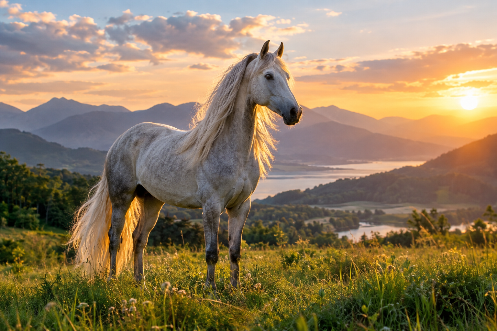
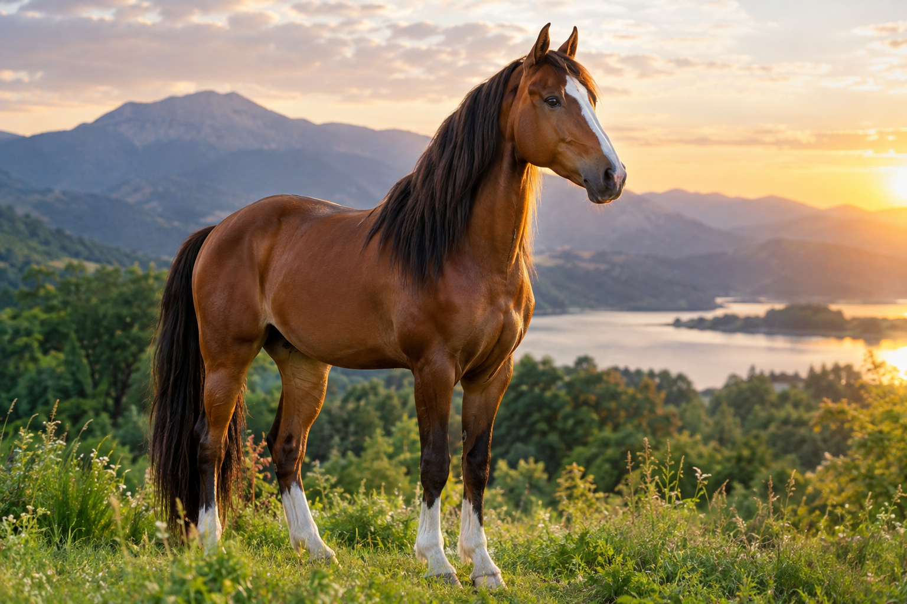

Persian Horse

Persian horses have a long history and are connected with the rich equestrian traditions of Persia. They are appreciated for their appearance, endurance, and historical importance.
Discover the fascinating world of horses
Horses are beautiful, intelligent, and powerful animals that have shared a close relationship with humans for thousands of years. They are known for their strength, speed, elegance, and unique personalities.
Horses are used for many different activities, including riding, equestrian sports, recreation, and work. They are also social animals that can build strong relationships with both horses and humans.
There are many horse breeds around the world. Every breed has its own history, appearance, characteristics, and abilities. Some horses are known for their speed, while others are valued for their strength, endurance, or suitability for riding.

Persian horses have a long history and are connected with the rich equestrian traditions of Persia. They are appreciated for their appearance, endurance, and historical importance.

German horse breeds include several well-known breeds developed for riding, sport, and other equestrian activities. Many are known for their athletic ability, strength, and trainability.
Horses can have many different coat colors and patterns. Common horse colors include black, brown, bay, chestnut, gray, and white. Horse coat color is influenced by genetics, and some breeds are known for particular colors or patterns.
Taking care of a horse is an important responsibility. Horses need appropriate food, clean water, regular exercise, grooming, veterinary care, and a safe living environment.
Regular grooming helps keep a horse's coat, mane, and tail clean. Horses also need regular hoof care because healthy hooves are important for movement and overall well-being.
Equestrianism is the practice and sport of riding, training, and working with horses. Horse riding includes different disciplines and activities, such as dressage, show jumping, and recreational riding.
Working with horses requires communication, patience, practice, responsibility, and respect for the animal.
People are attracted to horses for many different reasons. Their beauty, strength, intelligence, and individual personalities make them fascinating animals.
For many riders, spending time with a horse can also be a way to develop patience, responsibility, confidence, and a connection with nature.
Horses are remarkable animals with a long and important relationship with humans. Learning about horse breeds, behavior, colors, care, and equestrianism can help us understand these animals better and appreciate their important place in the world.